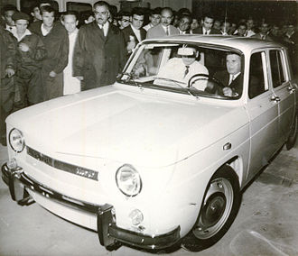

Generalitati
S C. Automobile Dacia S.A., cunoscut și sub numele de Dacia, este un producător român de automobile
care își ia numele din regiunea istorică care constituie România de astăzi. Din 1999 aparține grupului
francez Renault. Obiectul de activitate al societății îl constituie producerea și comercializarea
de automobile, piese auto, mașini unelte și instalații pentru industria de automobile.
În luna mai 2014, Uzina Dacia a atins cifra de 5 milioane de automobile produse în intervalul de
46 de ani de la înființare. Dacă în 1998 s-a atins borna celor 2 milioane de mașini, în următorii 16 ani
s-au produs peste 3 milioane de exemplare. Modelul cu numărul 5 milioane a fost o Dacie Duster.
Inceputurile
Pentru a reduce timpul între proiectare și lansarea în producția de serie a unui autoturism,
autoritățile române au considerat necesară producerea unui autoturism sub licență obținută de la
un producător străin. Se dorea o licență pentru un autoturism din clasa medie cu o capacitate
cilindrică cuprinsă între 1.000 și 1.300 cm3 și să se producă între 40.000 și 50.000 automobile pe an.
Dacia a luat naștere în 1966 la Colibași (astăzi Mioveni), județul Argeș, având la bază un acord între
autoritățile comuniste și producătorul francez de automobile, Renault, ce prevedea asamblarea unui
model Renault sub marca Dacia. Construcția Uzinei de Autoturisme Mioveni a început în 1966 și s-a
încheiat într-un timp record de doar un an și jumătate.
Cateva modele istorice:
Dacia 1100
Dacia 1100 a fost primul model de autoturism produs de producătorul român Automobile Dacia S.A.,
fiind o copie a modelului francez Renault 8. Între 1968 și 1971 au fost produse 37.546 de autoturisme.
Conform contractului, Renault furniza toate părțile componente ale modelului, urmând ca cei de la Dacia
să le asambleze. Din 1968 și până în 1972, aproximativ 44.000 de autoturisme Dacia 1100 au fost produse,
în 1970 apărând o ușoară modificare estetică la partea frontală. A mai fost produs, deși în număr limitat,
modelul 1100S, cu 2 perechi de faruri și un motor mai puternic, folosit de poliție și în cursele de raliu.
Puține au mai rămas în stare de funcționare.
Motorul de la Renault dezvolta 46 CP (35kW) la 4600 turaţii şi propulsa autoturismul până la 132 km/h.
Era montat longitudinal pe spate şi răcit cu apă, deci portbagajul era in pozitionat in fata.Preţul iniţial
a fost în jur de 55.000 Lei, în condiţiile în care salariul mediu net în 1968 era de 1.139 Lei.
Vânzările totuşi au continuat să fie foarte bune, chiar şi după ce a fost lansat modelul 1300 în 1969,
modelul 1100 fiind fabricat în paralel cu acesta încă 2 ani.

În 1965 Nicolae Ceauşescu a fost ales prim-secretar al PCR şi decide că trebuie redus efortul valutar făcut cu importul de autoturisme. Primul automobil ieşit pe poarta fabricii la deschiderea din 20 august 1968 a fost făcut cadou Secretarului General al Partidului Comunist Român, Nicolae Ceauşescu.
Dacia 1300
Dacia 1300 este un autoturism de familie fabricat de compania Dacia între anii 1969 și 1984. Acesta a apărut în urma licenței obținută de la compania franceză Renault, intrând în producție în august 1969 și având la bază modelul Renault 12. La acea vreme modelul avea un aspect modern și economic. Inițial, modelul dispunea de o singură caroserie berlină cu 4 uși și 5 locuri. Blocul motopropulsor avea capacitatea cilindrică de 1.289 cmc care dezvolta 54 de cai putere, o viteză maximă de 144 km/h și avea un consum de 7,0 litri/100 km.
În 1970 sunt lansate trei variante de echipare pentru modelul 1300: Standard, Lux, Lux Super 1301 (model destinat numai folosirii ca mașină de serviciu a Partidului Comunist Român și a Securității). Dacia 1301 Lux Super avea dotări care nu se aflau pe modelele Standard și Lux. Modelul 1300 a fost înlocuit de modelul Dacia 1310 în 1979, însă a rămas în producție până în 1984.

Dacia 1310
Dacia 1310 este un autoturism de familie fabricat de compania Dacia între anii 1979 și 2004, fiind lansat ca succesor al modelului Dacia 1300. A fost produsă în număr de 2.278.691 de unități, ultima berlină fiind fabricată la data de 21 iulie 2004, iar ultima camionetă dacia pick-up în decembrie 2006. În același an a fost lansat succesorul ei, modelul Dacia Logan.
După expirarea licenței de fabricare a modelului Dacia 1300 (ce avea la bază modelul Renault 12)
în anul 1978, are loc prima restilizare majoră, iar noul model este redenumit Dacia 1310.
Aceasta a fost prezentată în premieră în toamna anului 1979 la Expoziția Realizărilor Economiei Naționale
(EREN), desfășurată în București, fiind desemnat ca "modelul 1980". Motorul de 1.289 cm³ avea o puterea
maximă de 56 de cai putere (față de 55,2) la 5.250 rpm, iar cuplul maxim era de 94 de Nm la 3.500 rpm.
Consumul obținut la o viteză medie de 80 km/h era de 7,0 litri la suta de kilometri, timpul de demarare
de la 0 la 100 km/h era de 16,2 secunde, iar viteza maximă era de circa 152-154 km/h.
Între anii 1980 și 1984 s-au efectuat o serie de teste pentru introducerea de motoare Diesel
și au fost prezentate modele echipate cu astfel de motoare, însă acestea nu au ajuns
niciodată în faza de producție de serie.
In video vedem si auzim motorul original al unei dacii 1310 din 1983, dacia bunicului meu.

Dacia in zilele noastre
Dacia Logan
Dacia Logan este o familie de automobile produse și comercializate de producătorul francez Renault și filiala sa din România Dacia de la jumătatea anului 2004, ca succesor al Daciei 1310 și Daciei Solenza. A fost prezentat pe 2 iunie 2004 la Paris și este disponibil din 1 septembrie 2004. De asemenea, este unul dintre cele mai de succes modele ale companiei.
Este construit pe platforma modulară CMF-B LS utilizată de noul Sandero, despre care se spune că combină o rezistență și rigiditate mai mare cu o greutate mai mică, respectând în același timp testele de impact mai stricte. Noul motor reduce emisiile și, din 2021, respectă cerințele de control al poluării.

Dacia Duster
Dacia Duster este un automobil produs și comercializat de producătorul francez Renault
și filiala sa din România Dacia din 2010. În prezent se află la a doua generație, lansată
în toamna anului 2017. Este comercializat sub numele de Renault Duster pe anumite piețe precum
cea din America Latină, Rusia, Ucraina, Asia, Orientul Mijlociu, Africa de Sud și Noua Zeelandă.
Este introdus din martie 2010, și este al treilea model al mărcii Dacia bazat pe platforma de Logan,
după Sandero.
Pick-up-ul cu cabină dublă în patru uși a fost lansat la sfârșitul anului 2015 în America de Sud,
comercializat ca Renault Duster Oroch, în timp ce în România a fost lansat Dacia Duster Pick-Up în două uși în 2020.
În iunie 2022 Dacia a lansat al doilea facelift pentru a doua generație Duster. Schimbările au constat în mare parte în implementarea noii identități vizuale Dacia. A fost schimbată grila frontală cu una cu un nou design care să încorporeze noul logo „Dacia Link”, iar noul logotip Dacia a înlocuit sigla precedentă de pe volan și hayon.